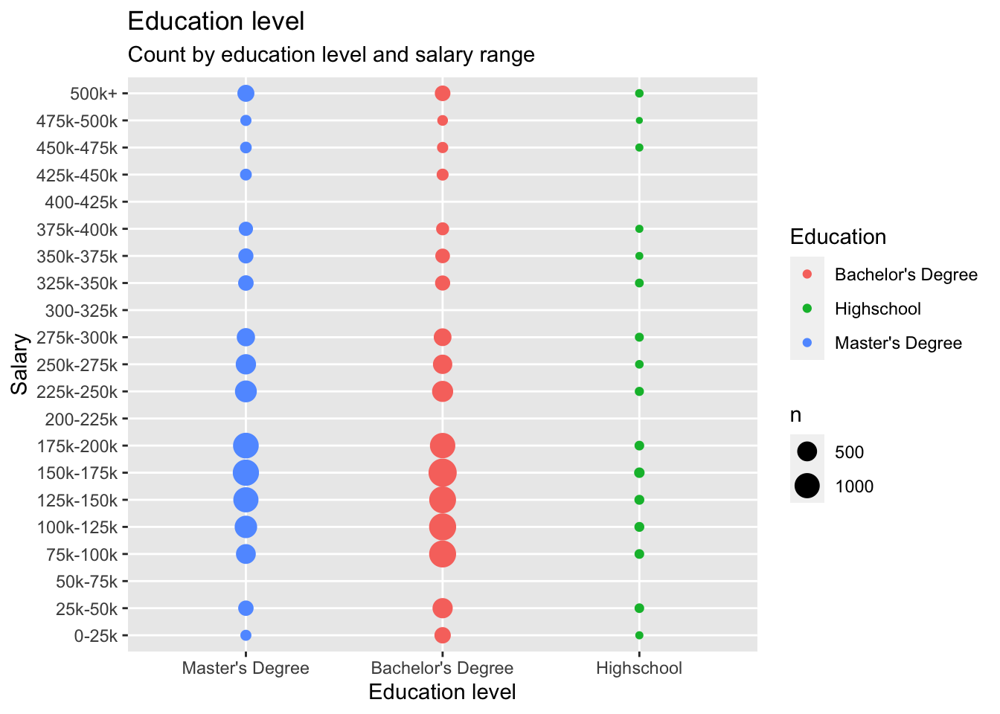
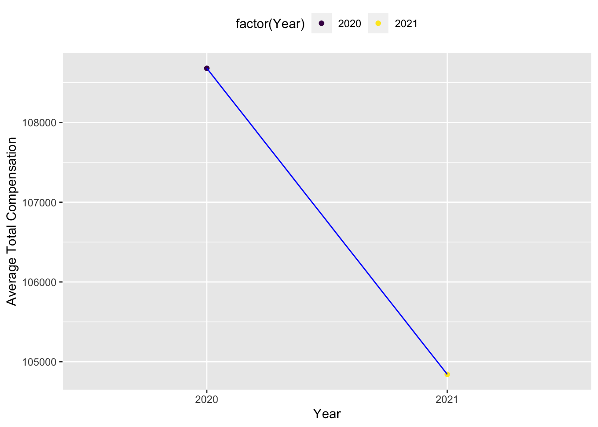
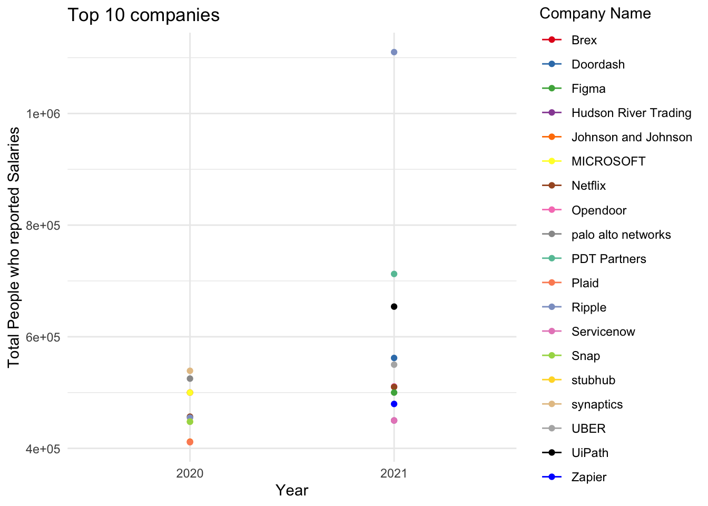
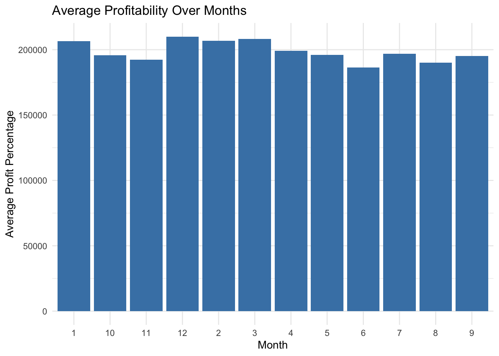
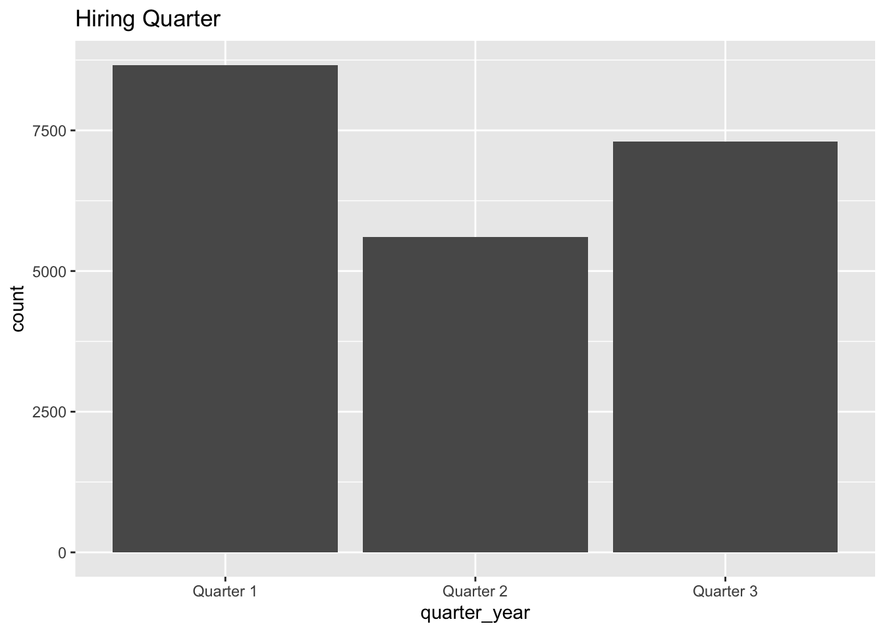
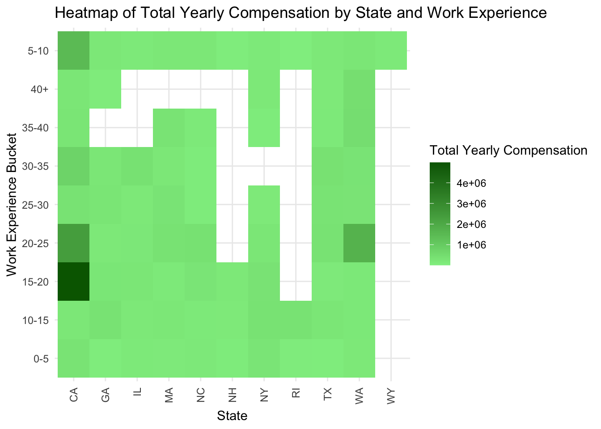
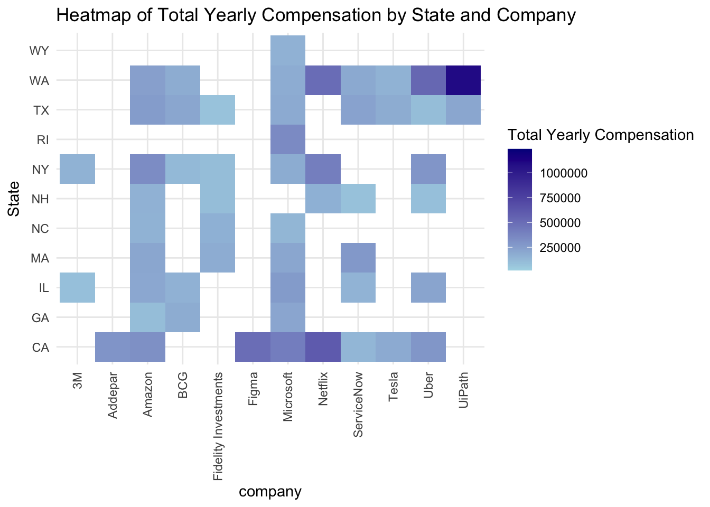
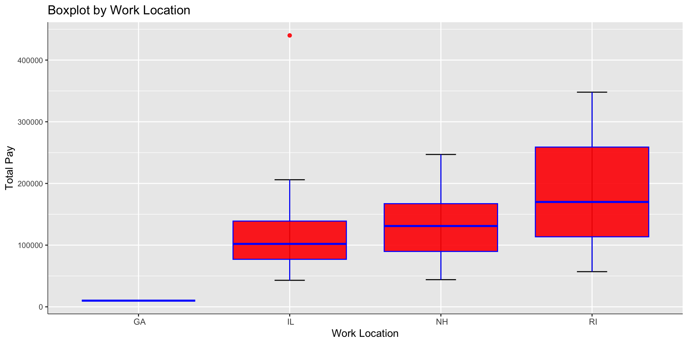
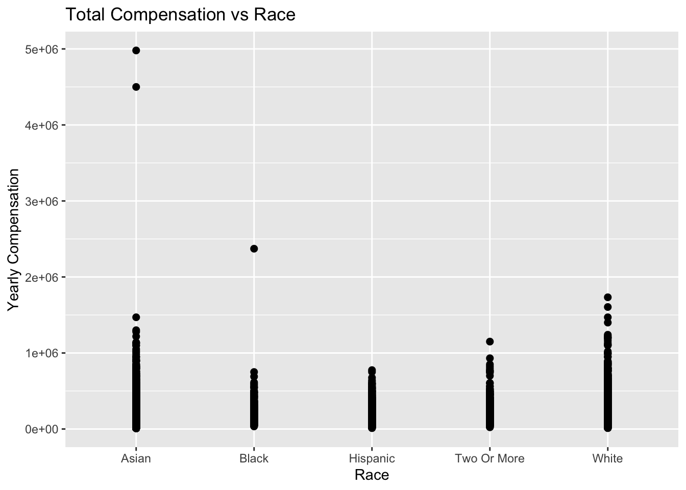

library(tidyverse)
library(readr)
library(ggplot2)
library(summarytools)
library(lubridate)
library(dplyr)
knitr::opts_chunk$set(echo = TRUE, warning=FALSE, message=FALSE)DACCS 601 Final Project
final_Project_assignment
final_project
Priyanka Perumalla
Data Science and STEM salary dataset
Tech Salary
Data Science and STEM Salaries Analysis
Introduction
The dataset I am analyzing, “The Data Science and STEM Salaries Dataset,” is sourced from levels.fyi. Levels.fyi is a platform that collects and provides information on job levels, salaries, and compensation packages in various companies and industries. The dataset represents salary and compensation information for individuals working in data science and STEM (Science, Technology, Engineering, and Mathematics) fields.
Each row in the dataset represents an individual case or observation, which corresponds to a specific person’s employment details and compensation information. The dataset includes columns such as timestamp (when the data was recorded), company (the company the individual works for), level (job level or position), title (job title), total yearly compensation, location (geographic location), years of experience, years at the company, various tags (related to skills or domains), base salary, stock grant value, bonus, gender, other details, city ID, designated market area (DMA) ID, row number, and information about the individual’s education and race.
Data Description
The dataset used in this analysis is sourced from levels.fyi, a platform that collects and provides information on job levels, salaries, and compensation packages. The data represents salary and compensation information specifically for data science and STEM (Science, Technology, Engineering, and Mathematics) roles. The data collection process on levels.fyi involves individuals voluntarily sharing their employment and compensation details. Users can submit their salary information, along with other relevant details, to contribute to the platform’s database. This crowd sourced approach allows for a diverse range of data to be collected, representing different companies, job levels, and locations. The dataset offers insights into the salaries and compensation packages received by data science and STEM professionals, enabling analysis and exploration of various factors that influence compensation in these fields.
Reading the dataset
data <- read.csv("PriyankaPerumalla_FinalProjectData/Levels_Fyi_Salary_Data.csv")Presenting the descriptive information of the dataset. Like what all columns are present and what all information is present in every column. The nature of every column can be viewed through this sample data.
::: {.cell}
```{.r .cell-code}
head(data)
```
::: {.cell-output-display}
`````{=html}
<div data-pagedtable="false">
<script data-pagedtable-source type="application/json">
{"columns":[{"label":[""],"name":["_rn_"],"type":[""],"align":["left"]},{"label":["timestamp"],"name":[1],"type":["chr"],"align":["left"]},{"label":["company"],"name":[2],"type":["chr"],"align":["left"]},{"label":["level"],"name":[3],"type":["chr"],"align":["left"]},{"label":["title"],"name":[4],"type":["chr"],"align":["left"]},{"label":["totalyearlycompensation"],"name":[5],"type":["int"],"align":["right"]},{"label":["location"],"name":[6],"type":["chr"],"align":["left"]},{"label":["yearsofexperience"],"name":[7],"type":["dbl"],"align":["right"]},{"label":["yearsatcompany"],"name":[8],"type":["dbl"],"align":["right"]},{"label":["tag"],"name":[9],"type":["chr"],"align":["left"]},{"label":["basesalary"],"name":[10],"type":["dbl"],"align":["right"]},{"label":["stockgrantvalue"],"name":[11],"type":["dbl"],"align":["right"]},{"label":["bonus"],"name":[12],"type":["dbl"],"align":["right"]},{"label":["gender"],"name":[13],"type":["chr"],"align":["left"]},{"label":["otherdetails"],"name":[14],"type":["chr"],"align":["left"]},{"label":["cityid"],"name":[15],"type":["int"],"align":["right"]},{"label":["dmaid"],"name":[16],"type":["int"],"align":["right"]},{"label":["rowNumber"],"name":[17],"type":["int"],"align":["right"]},{"label":["Masters_Degree"],"name":[18],"type":["int"],"align":["right"]},{"label":["Bachelors_Degree"],"name":[19],"type":["int"],"align":["right"]},{"label":["Doctorate_Degree"],"name":[20],"type":["int"],"align":["right"]},{"label":["Highschool"],"name":[21],"type":["int"],"align":["right"]},{"label":["Some_College"],"name":[22],"type":["int"],"align":["right"]},{"label":["Race_Asian"],"name":[23],"type":["int"],"align":["right"]},{"label":["Race_White"],"name":[24],"type":["int"],"align":["right"]},{"label":["Race_Two_Or_More"],"name":[25],"type":["int"],"align":["right"]},{"label":["Race_Black"],"name":[26],"type":["int"],"align":["right"]},{"label":["Race_Hispanic"],"name":[27],"type":["int"],"align":["right"]},{"label":["Race"],"name":[28],"type":["chr"],"align":["left"]},{"label":["Education"],"name":[29],"type":["chr"],"align":["left"]}],"data":[{"1":"6/7/2017 11:33:27","2":"Oracle","3":"L3","4":"Product Manager","5":"127000","6":"Redwood City, CA","7":"1.5","8":"1.5","9":"NA","10":"107000","11":"20000","12":"10000","13":"NA","14":"NA","15":"7392","16":"807","17":"1","18":"0","19":"0","20":"0","21":"0","22":"0","23":"0","24":"0","25":"0","26":"0","27":"0","28":"NA","29":"NA","_rn_":"1"},{"1":"6/10/2017 17:11:29","2":"eBay","3":"SE 2","4":"Software Engineer","5":"100000","6":"San Francisco, CA","7":"5.0","8":"3.0","9":"NA","10":"0","11":"0","12":"0","13":"NA","14":"NA","15":"7419","16":"807","17":"2","18":"0","19":"0","20":"0","21":"0","22":"0","23":"0","24":"0","25":"0","26":"0","27":"0","28":"NA","29":"NA","_rn_":"2"},{"1":"6/11/2017 14:53:57","2":"Amazon","3":"L7","4":"Product Manager","5":"310000","6":"Seattle, WA","7":"8.0","8":"0.0","9":"NA","10":"155000","11":"0","12":"0","13":"NA","14":"NA","15":"11527","16":"819","17":"3","18":"0","19":"0","20":"0","21":"0","22":"0","23":"0","24":"0","25":"0","26":"0","27":"0","28":"NA","29":"NA","_rn_":"3"},{"1":"6/17/2017 0:23:14","2":"Apple","3":"M1","4":"Software Engineering Manager","5":"372000","6":"Sunnyvale, CA","7":"7.0","8":"5.0","9":"NA","10":"157000","11":"180000","12":"35000","13":"NA","14":"NA","15":"7472","16":"807","17":"7","18":"0","19":"0","20":"0","21":"0","22":"0","23":"0","24":"0","25":"0","26":"0","27":"0","28":"NA","29":"NA","_rn_":"4"},{"1":"6/20/2017 10:58:51","2":"Microsoft","3":"60","4":"Software Engineer","5":"157000","6":"Mountain View, CA","7":"5.0","8":"3.0","9":"NA","10":"0","11":"0","12":"0","13":"NA","14":"NA","15":"7322","16":"807","17":"9","18":"0","19":"0","20":"0","21":"0","22":"0","23":"0","24":"0","25":"0","26":"0","27":"0","28":"NA","29":"NA","_rn_":"5"},{"1":"6/21/2017 17:27:47","2":"Microsoft","3":"63","4":"Software Engineer","5":"208000","6":"Seattle, WA","7":"8.5","8":"8.5","9":"NA","10":"0","11":"0","12":"0","13":"NA","14":"NA","15":"11527","16":"819","17":"11","18":"0","19":"0","20":"0","21":"0","22":"0","23":"0","24":"0","25":"0","26":"0","27":"0","28":"NA","29":"NA","_rn_":"6"}],"options":{"columns":{"min":{},"max":[10]},"rows":{"min":[10],"max":[10]},"pages":{}}}
</script>
</div>
`````
:::
:::On,analysing the dimensions of the data set. We see that the dataset has 62642 rows to begin with and 29 distinct columns.
::: {.cell}
```{.r .cell-code}
dim(data)
```
::: {.cell-output .cell-output-stdout}
```
[1] 62642 29
```
:::
:::Checking to see if any columns are repeating. We can notice that all the 29 columns ar eunique
::: {.cell}
```{.r .cell-code}
length(unique(data))
```
::: {.cell-output .cell-output-stdout}
```
[1] 29
```
:::
:::Taking a look on what all columns are present in the dataset.
::: {.cell}
```{.r .cell-code}
colnames(data)
```
::: {.cell-output .cell-output-stdout}
```
[1] "timestamp" "company"
[3] "level" "title"
[5] "totalyearlycompensation" "location"
[7] "yearsofexperience" "yearsatcompany"
[9] "tag" "basesalary"
[11] "stockgrantvalue" "bonus"
[13] "gender" "otherdetails"
[15] "cityid" "dmaid"
[17] "rowNumber" "Masters_Degree"
[19] "Bachelors_Degree" "Doctorate_Degree"
[21] "Highschool" "Some_College"
[23] "Race_Asian" "Race_White"
[25] "Race_Two_Or_More" "Race_Black"
[27] "Race_Hispanic" "Race"
[29] "Education"
```
:::
:::Understanding the data:
The data set contains information from the “Data Science and STEM Salaries” data collected by levels.fyi. It consists of 62642 rows, representing as many as 62642 participants who volunteered to enter information in Levels.fyi. The data set contains 29 columns that capture various attributes of the participants and their responses.
- timestamp - The timestamp indicates when the survey response was recorded.
- company - This column represents the name of the company where the particpant is employed.
- level - It denotes the career level or seniority of the participant.
- title - This column specifies the job title or position held by the participant.
- totalyearlycompensation - It represents the total annual compensation of the participant, including salary, stock grants, and bonuses.
- location - This column indicates the geographical location of the participant.
- yearsofexperience - It indicates the number of years of professional experience the participant has.
- yearsatcompany - This column specifies the number of years the participant has been with their current company.
- tag - The tag column may provide additional information or categorization related to the participant or their response.
- basesalary - It represents the base salary component of the participant’s total yearly compensation.
- stockgrantvalue - This column captures the value of stock grants included in the participant’s total yearly compensation.
- bonus - It denotes the bonus amount included in the participant’s total yearly compensation.
- gender - This column represents the gender of the participant.
- otherdetails - The otherdetails column may contain additional information or details provided by the participant.
- cityid - It indicates the city identifier associated with the participant’s location.
- dmaid - The dmaid column represents the Designated Market Area (DMA) identifier, which relates to the participant’s location.
- rowNumber - This column assigns a unique row number to each participant in the dataset.
- Masters_Degree - This column captures whether the participant holds a Master’s degree.
- Bachelors_Degree - It indicates whether the participant holds a Bachelor’s degree.
- Doctorate_Degree - This column specifies whether the participant holds a Doctorate degree.
- Highschool - It denotes whether the participant has completed high school education.
- Some_College - This column represents whether the participant has attended college without completing a degree.
- Race_Asian - It indicates whether the participant identifies as Asian.
- Race_White - This column represents whether the participant identifies as White.
- Race_Two_Or_More - It denotes whether the participant identifies as belonging to two or more races.
- Race_Black - This column indicates whether the participant identifies as Black.
- Race_Hispanic - It represents whether the participant identifies as Hispanic.
- Race - This column captures the participant’s race or ethnic background.
- Education - It denotes the highest level of formal education completed by the participant.
Data tidying and mutation
To start off with any analysis the data needs to be tidy.
Loading the required libraries
library(tidyverse)
library(scales)
annotate <- ggplot2::annotateI am trying to check if this data has any null values. As a next step, I have omitted the null values as they would not contribute positively to my analysis. After omitting the rows which have atleast one null value, I am left with 21575 rows and 29 columns.
sum(is.na(data))[1] 115356data<- na.omit(data)
dim(data)[1] 21575 29It can be noticed that the summary column for race and education level already exists. But the flag columns for every category of education and race also exist. This is a redundancy and such columns can be deleted. I am getting rid of the columns Race_Asian,Race_White, Race_Black,Race_Hispanic,Some_College,Highschool,Doctorate_Degree,Bachelors_Degree,Masters_Degree,otherdetails. My dataset now has 19 columns.
data<- subset(data, select = -c(Race_Asian,Race_White, Race_Black,Race_Hispanic,Some_College,Highschool,Doctorate_Degree,Bachelors_Degree,Masters_Degree,otherdetails) )
dim(data)[1] 21575 19The location column in the dataset has the format ‘city,state,country’. But I would like to mutate this column to extract city,state and country columns separtely. After this mutation, I have 21 columns.
data<-separate(data = data, col = location, into = c("City", "State","Country"), sep = ",")
dim(data)[1] 21575 21The datetimestamp column in the dataset has the format ‘MM/DD/YYYY hh:mm:ss’. But I would like to mutate this column to extract Date and time separtely. After this mutation, I have 22 columns.
data<-separate(data = data, col = timestamp, into = c("Date ", "Time"), sep = " ")
dim(data)[1] 21575 22head(data)The date column in the dataset has the format ‘MM/DD/YYYY’. But I would like to mutate this column further to extract month,day and year separtely. After this mutation, I have 24 columns.
data<-separate(data = data, col = 1, into = c("Month", "Day","Year"), sep = "/")
dim(data)[1] 21575 24head(data)I want to group salaries together into buckets for further analysis. I have kept the bucket size as $25,000 USD. I am trying get the count of people who fall into each of such compensation buckets.
data <- data %>%
mutate(Salary_bucket = case_when(totalyearlycompensation >=0 & totalyearlycompensation <25000 ~ "0-25k",
totalyearlycompensation >=25000 & totalyearlycompensation <50000 ~ "25k-50k",
totalyearlycompensation >=50000 & totalyearlycompensation <75000 ~ "50k-750k",
totalyearlycompensation >=75000 & totalyearlycompensation <100000 ~ "75k-100k",
totalyearlycompensation >=100000 & totalyearlycompensation <125000 ~ "100k-125k",
totalyearlycompensation >=125000 & totalyearlycompensation <150000 ~ "125k-150k",
totalyearlycompensation >=150000 & totalyearlycompensation <175000 ~ "150k-175k",
totalyearlycompensation >=175000 & totalyearlycompensation <200000 ~ "175k-200k",
totalyearlycompensation >=200000 & totalyearlycompensation <225000 ~ "200k-225k",
totalyearlycompensation >=225000 & totalyearlycompensation <250000 ~ "225k-250k",
totalyearlycompensation >=250000 & totalyearlycompensation <275000 ~ "250k-275k",
totalyearlycompensation >=275000 & totalyearlycompensation <300000 ~ "275k-300k",
totalyearlycompensation >=300000 & totalyearlycompensation <325000 ~ "300k-325k",
totalyearlycompensation >=325000 & totalyearlycompensation <350000 ~ "325k-350k",
totalyearlycompensation >=350000 & totalyearlycompensation <375000 ~ "350k-375k",
totalyearlycompensation >=375000 & totalyearlycompensation <400000 ~ "375k-400k",
totalyearlycompensation >=400000 & totalyearlycompensation <425000 ~ "400k-425k",
totalyearlycompensation >=425000 & totalyearlycompensation <450000 ~ "425k-450k",
totalyearlycompensation >=450000 & totalyearlycompensation <475000 ~ "450k-475k",
totalyearlycompensation >=475000 & totalyearlycompensation <500000 ~ "475k-500k",
totalyearlycompensation >=500000 ~ "500k+"))I want to group years of experience into buckets for further analysis. I have kept the bucket size as 5 years . I am trying get the count of people who fall into each of such experience buckets.
data <- data %>%
mutate(Work_experience_bucket = case_when(yearsofexperience >=0 & yearsofexperience <5 ~ "0-5",
yearsofexperience >=5 & yearsofexperience <10 ~ "5-10",
yearsofexperience >=10 & yearsofexperience <15 ~ "10-15",
yearsofexperience >=15 & yearsofexperience <20 ~ "15-20",
yearsofexperience >=20 & yearsofexperience <25 ~ "20-25",
yearsofexperience >=25 & yearsofexperience <30 ~ "25-30",
yearsofexperience >=30 & yearsofexperience <35 ~ "30-35",
yearsofexperience >=35 & yearsofexperience <40 ~ "35-40",
yearsofexperience >=40 ~ "40+"))I want to group months of the year into quarters to deep dive and understand how hiring and compensation offers change with respect to quarters in a company. I am trying get 4 quarters of a fiscal year.
data <- data %>%
mutate(quarter_year = case_when(Month >=1 & Month <=3 ~ "Quarter 1",
Month >=4 & Month <=6 ~ "Quarter 2",
Month >=7 & Month <=9 ~ "Quarter 3",
Month >=10 & Month <=12 ~ "Quarter 4"
))#conduct summary statistics of the dataset(s)
Now that the data is clean, tidy and all set for analysis, I would like to now view the summary statistics of the cleaned dataset.
summarise_all(data, mean)summarise_all(data, min)summarise_all(data, max)summarise_all(data, median)summary(data) Month Day Year Time
Length:21575 Length:21575 Length:21575 Length:21575
Class :character Class :character Class :character Class :character
Mode :character Mode :character Mode :character Mode :character
company level title
Length:21575 Length:21575 Length:21575
Class :character Class :character Class :character
Mode :character Mode :character Mode :character
totalyearlycompensation City State
Min. : 10000 Length:21575 Length:21575
1st Qu.: 119000 Class :character Class :character
Median : 174000 Mode :character Mode :character
Mean : 197855
3rd Qu.: 245000
Max. :4980000
Country yearsofexperience yearsatcompany tag
Length:21575 Min. : 0.000 Min. : 0.000 Length:21575
Class :character 1st Qu.: 3.000 1st Qu.: 0.000 Class :character
Mode :character Median : 6.000 Median : 2.000 Mode :character
Mean : 7.123 Mean : 2.704
3rd Qu.:10.000 3rd Qu.: 4.000
Max. :45.000 Max. :40.000
basesalary stockgrantvalue bonus gender
Min. : 4000 Min. : 0 Min. : 0 Length:21575
1st Qu.:100000 1st Qu.: 0 1st Qu.: 3000 Class :character
Median :135000 Median : 20000 Median : 13000 Mode :character
Mean :133865 Mean : 44894 Mean : 18418
3rd Qu.:165000 3rd Qu.: 55000 3rd Qu.: 25000
Max. :900000 Max. :954000 Max. :900000
cityid dmaid rowNumber Race_Two_Or_More
Min. : 10 Min. : 0.0 Min. :21208 Min. :0.00000
1st Qu.: 7322 1st Qu.:501.0 1st Qu.:47069 1st Qu.:0.00000
Median : 8198 Median :751.0 Median :59844 Median :0.00000
Mean :10176 Mean :561.2 Mean :59203 Mean :0.03541
3rd Qu.:11521 3rd Qu.:807.0 3rd Qu.:71590 3rd Qu.:0.00000
Max. :47926 Max. :881.0 Max. :83875 Max. :1.00000
Race Education Salary_bucket
Length:21575 Length:21575 Length:21575
Class :character Class :character Class :character
Mode :character Mode :character Mode :character
Work_experience_bucket quarter_year
Length:21575 Length:21575
Class :character Class :character
Mode :character Mode :character
I notice that the minimum total compensation is 10,000 USD and the maximum total compensation is 4,980,000 USD. The average compensation is 197,855 USD which is approximately 198,000 USD. The mean average years of experience is ar 7.12 years.
Potential research questions
The dataset provides several variables that can be used to answer various questions related to data science and STEM salaries. Here are some potential questions I tried to explore:
- How is the education level effecting the people who are seeking jobs in Data Science and STEM Domains.
- How does the gender pay gap manifest in the data? Are there noticeable differences in compensation between genders?
- Are there any trends or patterns in compensation based on educational attainment (Masters, Bachelors, Doctorate, etc.)?
- How does compensation vary across different fiscal years?
- Are there any preferred companies? What comes under the most desired 10 companies list?
- Are there any roles that are more preferred than others? What comes under the most desired 10 roles list?
- If somebody wants to switch a job to get a higher compensation, are there any preferred months of the year?
- If somebody wants to increase the likelihood of getting back interview calls, is there a preferred quarter for hiring?
- Correlation between State, Work Experience in years and yearly compensation?
- Correlation between State, Company and yearly compensation?
- States with varied jobs in terms of pay compared to others?
- Does racial discrimination exist in compensation packages?
Education level vs number of people
We will now examine the education metric. We use scatter charts and tile charts, respectively, to display the proportion of the indicated levels of both variables and the number of respondents to two indicators with the levels of the variables under consideration.
From the below plot, we see that about 9000 of respondants have a Master’s degree, 11,000 have a Bachelor’s degree and only a few hundrends have just a high school diploma. It looks like atleast a Bachelor’s degree is mandatory to get a job in the STEM and Data Science Domain. While a master’s degree does not look mandatory, only analysing the compensation difference would tell us if a master’s degree is worth it or not in terms of increased salary compensation.
education <- as.data.frame(table(data$Education))
ggplot(education, aes(reorder(Var1, +Freq), Freq))+
geom_bar(col = "gray10", stat = "identity", width = 0.6, fill = "orange")+
scale_x_discrete(limits = c("Master's Degree", "Bachelor's Degree", "Highschool"))+
labs(title = "Education level", y = "count", x = "Education level")Education level vs Salary vs Gender
We observe a gender- and education-based breakdown of the population who entered their salaries. The “I prefer to define myself” options in the variable are limited to the two most popular levels, female and male, due to the small number of refusals and indications. There are four times fewer women than men among the respondents. The proportions of people with and without a college degree are very similar for both sexes, but it is clear that those without a college degree are more likely to be men than the rest of the sample. It is interesting to see that the gender with most “Masters” degree and “College/High school” is men.
tile2 <- data %>%
filter(gender %in% c("Female", "Male")) %>%
group_by(gender, Education) %>%
summarise(count = n(), .groups = 'drop')
ggplot(tile2, aes(Education, gender))+
geom_tile(aes(fill = count), colour = "gray10", alpha = 0.5)+
scale_x_discrete(limits = c("Master's Degree", "Bachelor's Degree", "Highschool"))+
geom_text(aes(label = paste0(round(count/sum(tile2$count) * 100,1), "%")), size = 7)+
labs(title = "Education level", subtitle = "count by education level and gender", y = "Gender", x = "Education level")Salary vs Education level
The usual expectation is that salary should increase with education level. But in the tech industry, I feel that its only your talent and abilities that matter but not the education level. I have run the analysis to see it that is true. I can clearly see that the pattern is very similar for Bachelor’s Degree and Master’s Degree when I look at higher bands of salaries (200k USD +). So for jobs that pay above 200k USD, looks like degree does not matter. But when I look at the 100k USD to 200k USD salary band, the Bachelor’s degree population seems to win. But that might be because of the skewed distribution towards them. I can also notice some highschool diploma holders that fell in the band of 300k+. I can’t stop myself from mapping them to be a CEO of a company but a college dropout.
data %>%
filter(Salary_bucket!="") %>%
ggplot(., aes(Education, Salary_bucket, col = Education))+
geom_count()+
scale_x_discrete(limits = c("Master's Degree", "Bachelor's Degree", "Highschool"))+
scale_y_discrete(limits = c("0-25k","25k-50k","50k-75k","75k-100k","100k-125k","125k-150k","150k-175k","175k-200k","200-225k","225k-250k","250k-275k","275k-300k","300-325k","325k-350k","350k-375k","375k-400k","400-425k","425k-450k","450k-475k","475k-500k","500k+"))+
labs(title = "Education level", subtitle = "Count by education level and salary range", y = "Salary", x = "Education level")
Average Total Compensation for different years :
If we want to see how average total compensation for different years looks like, we could use a scatter plot to deduce a relationship between average total compensation and year. From below plot, we could see that, the average total compensation decreased from 2020 to 2021. There could be multiple unwarranted reasons for this trend which could be deduced from the given plot.But I strongly feel that the economic downtime has something to do with the reduced compensations at Tech firms.
data1 = data%>% na.omit() %>%
group_by(Year) %>% summarise(Mean_salary = mean(totalyearlycompensation))
p <- ggplot(
data1,
aes(y = as.numeric(Mean_salary), x = as.factor(Year), color = factor(Year), group = 1)) +
geom_point(size=1.5) +
scale_color_viridis_d() +
scale_linetype_manual() +
labs(x = "Year", y = "Average Total Compensation") +
theme(legend.position = "top")
p + geom_line(color='blue')
Top 10 Companies
Any fresh graduate like me would be interested to know what are the trending companies that pay above average salaries for that year in order to apply and join. For the year 2020 and 2021, we have Uber,Netflix,Figma,HRT,ServiceNow,UiPath etc as some of the top companies. As a person from STEM background, even I can attest that these companies truly are dream companies to land a job at for any graduate student.
colnames(data) [1] "Month" "Day"
[3] "Year" "Time"
[5] "company" "level"
[7] "title" "totalyearlycompensation"
[9] "City" "State"
[11] "Country" "yearsofexperience"
[13] "yearsatcompany" "tag"
[15] "basesalary" "stockgrantvalue"
[17] "bonus" "gender"
[19] "cityid" "dmaid"
[21] "rowNumber" "Race_Two_Or_More"
[23] "Race" "Education"
[25] "Salary_bucket" "Work_experience_bucket"
[27] "quarter_year" # Top companies
library(RColorBrewer)
top_companies_year <- data %>%group_by(Year,company) %>%summarise(avg_compensation=mean(totalyearlycompensation))%>%arrange(desc(avg_compensation))%>%group_by(Year)%>%
top_n(n = 10)
colour_count <- n_distinct(top_companies_year$company)
colour_palette1 <- brewer.pal(colour_count, name = "Set1")
colour_palette2 <- brewer.pal(colour_count, name = "Set2")
ggplot(top_companies_year, aes(x = Year, y = avg_compensation, color = company)) +
geom_line() +
geom_point() +
labs(title = "Top 10 companies",
x = "Year",
y = "Total People who reported Salaries",
color = "Company Name") +
theme_minimal() +
scale_color_manual(values = c(colour_palette1, colour_palette2,"black","blue") , name = "Company Name")
Top 10 Roles
The top 10 roles based on average yearly compensation come out to be 1 Data Scientist
2 Hardware Engineer
3 Human Resources
4 Marketing
5 Product Designer
6 Product Manager
7 Sales
8 Software Engineering Manager 9 Solution Architect
10 Technical Program Manager
# Filter the data for the top 3 bikes based on overall sales
top_ten_roles <- data %>%
group_by(title) %>%
summarise(avg_compensation = mean(totalyearlycompensation)) %>%
top_n(10, avg_compensation) %>%
select(title)
top_ten_rolesMonth on month entries
If somebody were to switch their role, they have a natural tendency to aim for a higher compensation package. But companies strictly spend in some months of the year and hence do not allow negotiation etc which helps to increase an techie’s package. But there are also months when the hiring is aggressive and companies only target to hire the required head count not very strict with the packages. We understand from all of this that planning is crucial in such processes. As seen in our analysis, the months of Dec, Jan, Feb, Mar are ideal for a job change as people have typically reported a higher package during those months.
job_month <- data %>%
group_by(Month) %>%arrange(desc(Month)) %>%
summarise(avg_compensation=mean(totalyearlycompensation))
# Plot average profit percentage over months
month_plot <- ggplot(job_month, aes(x = Month, y = avg_compensation)) +
geom_bar(stat = "identity", fill = "steelblue") +
labs(title = "Average Profitability Over Months",
x = "Month",
y = "Average Profit Percentage") +
theme_minimal()
# Display the plot
month_plot
Hiring Scene every quarter
If somebody were to switch their role, they first have to apply then clear the interviews etc. A lot of times, even after applying aggresively, people don’t get the callbacks for interviews. Hence, it is crucial to plan the time of the year which would be favorable for interview calls. The below analysis says,Quarter 1 of the year is highly favorable for such a thing,
dim(data)[1] 21575 27ggplot(data, aes(x = quarter_year)) + geom_bar() + ggtitle("Hiring Quarter")
Heat Map of Statewise distribution of salaries
Usually the salary of person increases with years of experience. But it can vary depending on the cost of living of the state he is working in. The below analysis says that California has highest salaries followed by Washington.
library(reshape2)
library(ggplot2)
filtered_data <- data%>%filter(State %in% c(" NY", " CA", " WA", " MA", " IL", " TX", " GA", " NH", " NC", " IL"," WY"," RI"))
heatmap_plot<-ggplot(filtered_data, aes(x = State, y = Work_experience_bucket, fill = totalyearlycompensation)) + geom_tile() + scale_fill_gradient(low = "lightgreen", high = "darkgreen", na.value = "grey", name = "Total Yearly Compensation") + labs(title = "Heatmap of Total Yearly Compensation by State and Work Experience", x = "State", y = "Work Experience Bucket") + theme_minimal() + theme(axis.text.x = element_text(angle = 90, vjust = 0.5, hjust = 1))
# Display the heatmap
heatmap_plot
Heat Map of State vs Company
Usually companies vary the compensation slightly to suite the cost of living in some regions. Our analysis supports this hypothesis. While the analysis says that California and Washington pay the highest salaries. It also rightly highlights the companies like UiPath,Netflix,Uber etc which pay people on a higher end.
library(reshape2)
library(ggplot2)
filtered_data1 <- data%>%filter(State %in% c(" NY", " CA", " WA", " MA", " IL", " TX", " GA", " NH", " NC", " IL"," WY"," RI"))%>%filter(company %in% c("Microsoft","Amazon","3M","Addepar","Tesla","BCG","Fidelity Investments","UiPath","Uber","Netflix","Figma","HRT","ServiceNow"))
heatmap_plot<-ggplot(filtered_data1, aes(x = company, y = State, fill = totalyearlycompensation)) + geom_tile() + scale_fill_gradient(low = "lightblue", high = "darkblue", na.value = "grey", name = "Total Yearly Compensation") + labs(title = "Heatmap of Total Yearly Compensation by State and Company", x = "company", y = "State") + theme_minimal() + theme(axis.text.x = element_text(angle = 90, vjust = 0.5, hjust = 1))
# Display the heatmap
heatmap_plot
State wise pay distribution
While some states may have highest pay bands, but some states are more suitable for people who are the average pay band as they will have many options when they switch the jobs. For example,the state of Rhode Island has wider range of pay compared to Illinois but for an average earning person, Illinois has many job oppportunities to pursue at the same pay band compared to Rhode Island.
# Using number of observation per group
filtered_data2 <- data%>%filter(State %in% c(" NY", " CA", " WA"," IL", " TX", " GA", " NH", " NC"," WY"," RI"))
func <- function(x) sprintf("%d", x)
plot <- filtered_data2 %>% na.omit() %>% ggplot(aes(x = State, y = totalyearlycompensation)) +
stat_boxplot(geom = "errorbar", # Boxplot with error bars
width = 0.2) +
geom_boxplot(fill = 'red', colour = "blue", # Colors
alpha = 0.9, outlier.colour = "red") +
scale_y_continuous(name = "Total Pay", labels = func) + # Continuous variable label
scale_x_discrete(name = "Work Location") + # Group label
ggtitle("Boxplot by Work Location") + # Plot title
theme(axis.line = element_line(colour = "black", # Theme customization
size = 0.25), axis.text.y = element_text(size = 8 ))
plot
Racial discrimination
Companies try their best to not discriminate anybody in any way. But some races have lesser representation in our respondants list. We can clearly see this dataset is skewed towards Asian and White races compared to others.
#ggplot(data, aes(x = Race, y= totalyearlycompensation)) + geom_bar() + ggtitle("Racial Distribution vs Pay")
ggplot(data, aes(x = Race, y = totalyearlycompensation)) +
geom_point(size = 2) +
labs(title = "Total Compensation vs Race",
x = "Race",
y = "Yearly Compensation")
CONCLUSION
With all the analysis above, we can answer the following questions-
The respondents are from different education backgrounds but the distribution is skewed towards peple who are atleast graduates. They make 99% of the participants, given its higher population (shown in excel sheet).
There is a huge gender gap that can be noticed. While it can be concluded that there is only one female for every 4 males in the data that has job in our interested domain. It can also be noticed that men tend to pursue higher education more tham female.
We see that there is a clear correlation between Education level (completed degree) vs job compensation. In every salary band such a trend is varying. Salary bands above 250k USD value individual accomplishments over educational degree.
The average total compensation changes with every year. In fact it reduced from the year 2020 to 2021.
There are definately preferred companies in terms of pay band.
Some roles in the tech industry are very popular compared to others like Data Scientist, Software Development Engineer, Hardware engineer etc.
Dec, Jan, Feb are more favorable for getting a higher package than other months of the year.
Quarter 1 gives an individual more chances of callbacks for interviews over other quarters.
Some states in the US are better for average earning people and some other states are better for people who earn way above the average pay bands.
The dataset I have picked is skewed towards some human races(Asians, White) over others(Hispanic)
Reflection
Since it is my first project in R, I learned that working with a data set involves taking raw data, cleaning it, then visualizing and interpreting different relationships. I focused on the variables that I was most intrigued by. Eg: I was curious about how gender/degrees influence jobs and compensation. What paths or roles do Data Science enthusiasts from different education backgrounds prefer? Which states are currently paying high? For somebody would I advise to pursue a masters degree in order to get a high salary? I’ve enjoyed learning the process for exploratory data analysis and visualization.